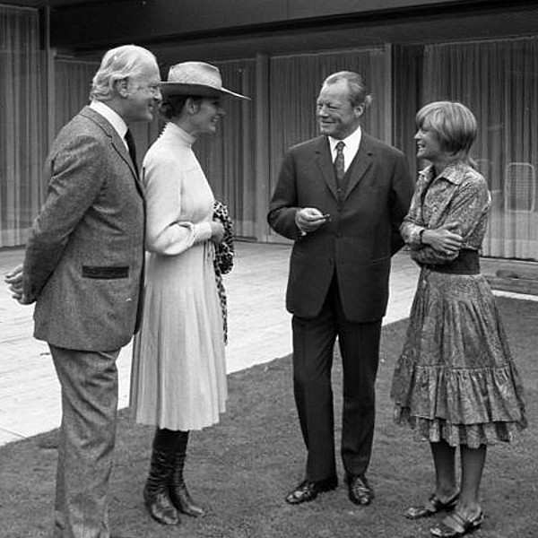

So wars früher...
Quelle: Von Bundesarchiv, B 145 Bild-F034158-0006 / Engelbert Reineke / CC-BY-SA 3.0, CC BY-SA 3.0 de,
https://commons.wikimedia.org/w/index.php?curid=87409458
In diesem Bild ist ein kleiner Teil der Crème de la Crème der damaligen
deutschen High Society zusammengekommen.
Die Persoenlichkeiten sind unter anderem: